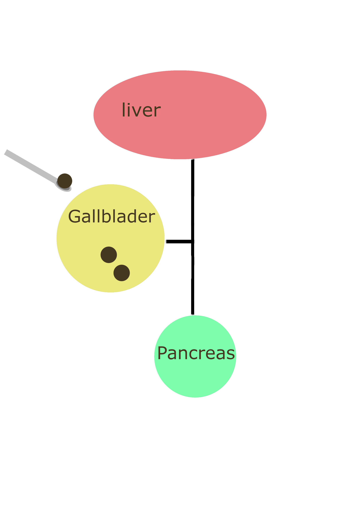

Instruction
Step 1
Insert the scoop into patient's gallblader through the incision.
Step 2
Carefully place the gallstone in the groove on the tip of the scoop.
Step 3
Remove the gallstone from patient's gallblader using the scoop.
Throughout the Western community, gallstones are a typical medical
finding. Gallstone surgical instruments make it possible to
effectively examine and extract gallstones from tubular channels.
An elastic rod with a round handle and a scrape at the lower
edge identifies as a gallstone surgical device. The sizes range from
micro to big to cover a wide range of cases.
Click here to learn more
Insert the scoop into patient's gallblader through the incision.
Carefully place the gallstone in the groove on the tip of the scoop.
Remove the gallstone from patient's gallblader using the scoop.
Still have questions? Click here to contact our trainers.
Copyright © eHospital 2022.